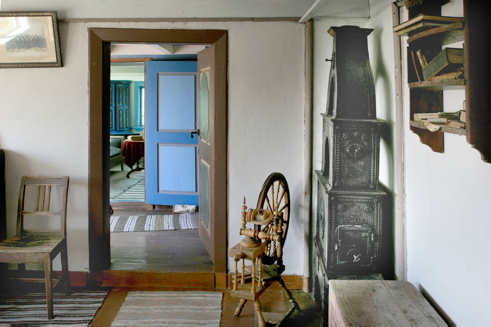
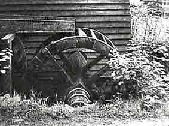
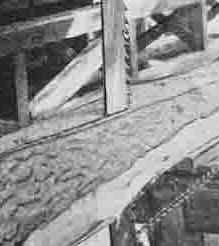

Høvåg museum
- omvisning 2005, også litt fra Isefjær mølle og Kornbrekke sag
Omviser og forteller: Sigrun Kjøstvedt
Foto: Torvald Slettebø, Universitetet i Agder, Seniorsenteret
Tekstutforming: Randi Stensby
Høvåg Museums- og Historielag ble stiftet for å bevare dette gårds- og sjømannshjemmet. Veien skulle legges om, og huset som hadde vært i samme families eie i generasjoner, kunne bli revet. Da dette ble kjent i bygda, dukket det opp et ønske og en ide om å få bevart huset. Ideen var å danne en forening, og i februar 1957 ble Høvåg Museums- og Historielag stiftet. I dag er huset her på Vesterhus et av museene i Høvåg.
Historielaget har reparert huset og innredet det slik at det i dag er som å komme inn i et hjem for en familie som livnærte seg med fiske, litt gårdsbruk og litt skog. Her er bestestue, dagligstue, kjøkken, og et kammers. Det opprinnelige huset er påbygd, og har fått flere rom. På loftet er det blant annet soveplasser, vevstol og annet vevutstyr.
Uthusbygningene på Gimle Gård. Låven til venstre huser blant annet Agder naturmuseums faste utstillinger. I bygningen i midten finnes zoologisk preparantverksted. Det karakteristiske Ridehuset er bygningen til høyre i bildet.
Som seg hør og bør, er det her i bestestua "hestehårssofa", kurvstol, stort rundt bord med rød plysjduk, familiealbum og speil på veggen. Her har historielaget plassert møbler og gjenstander slik det skulle være i en stue som for det meste sto på stas. Man brukte den bare til jul, og når det kom besøk. Hjørneskapet med årstall 1785 har fulgt familien.
I hjørnet en skrivepult. Men interiøret domineres av det runde bordet fra Ervik, rød plysjduk fra Kjøstvedt, familiealbum fra Hæstadgårdene, hestehårssofaen fra Åkerøya. Trekket er ikke hestehår, men malt seilduk. Et godt eksempel på oppfinnsomhet, og evne til få ting til med enklere materialer.
Etter råd fra Riksantikvaren i Kristiansand, ble det satt inn nye blyinnfattede vindusruter på 1950-tallet.
Speilet, som passer fint mellom vinduene, kommer fra Kjøstvedt.
Gyngestolen av amerikansk opprinnelse har vært flere ganger fram og tilbake over Atlanteren før den havnet her på museet. Portrettet på veggen er malt Kristoffer Årsnes. Han hadde noe malerutdannelse.
Kurvstolen kommer fra Kornbrekke, og står sammen med andre fine møbler, pidestall, kommode og spillebord. Noe fulgte huset, annet er samlet inn. Historeielaget får gaver og følger med på dødsbo. Vi har plukket litt her og litt der, sier Sigrun Kjøstvedt. Etter hjemmet til en ungkar på Åkerøya fikk de mye. Familien hans, som er bosatt i Amerika, overlot det meste til historielaget.
Sjarmerende maleri av Høvåg kirke før skogen vokste opp og skjulte den.
Seilskutebilder hører med i et hjem ved kysten. På kommoden ligger en rund eske til oppbevaring av snipper. Den er nok ført hit fra Amerika.
Et elegant fotoalbum med portretter og bilder av familiemedlemmer, alvorlige og i sine beste klær.
Det var ikke mange bøker i hjemmet i tidligere tider.
Det var helst bibel, salmebok, og huspostill. Hylla kommer fra Kjøstvedt.
Den bereiste gyngestolen, som har gynget fire ganger fram og tilbake over Atlanteren.
Døra inn til dagligstua var helt overmalt, men da man kunne skimte bokstaver, ble den sendt til Arendals-distriktet, der konservator Sigrid Nilsen fjernet flere lag med maling, og årstall og bokstaver kom fram: 1803, initialene står for Pål Osmundsen Vesterhus (1767 - 1821)
Interiøret i dagligstua har en annen karakter enn bestestua. Her, på kjøkkenet, og i rommene på loftet, møter vi hverdagslivet med redskap, bruksting, senger, rokker og vever.
Sommersolskinnet lyser opp dagligstua, og faller inn over den store kista under vinduet, og spisebordet midt i rommet. Kista er museets eldste gjenstand.
Malerisk utsikt gjennom de nye blyinnfattede rutene.
Den gamle trebollen er en såkalt russebolle. I bakgrunnen det mest iøynefallende og spesielle møblet i dagligstua.
Alle besøkende, og ikke minst skoleelever, blir veldig interessert i det store skatollet, finurlig utformet med atskillige skuffer og små skap.

Skatollet har selvsagt et hemmelig rom. Her er det trukket fram.

Broderte duker til pynt på bord og kommoder, og et uferdig håndarbeid i bollen, er med på å gi en hjemlig og bebodd atmosfære.
Hjemmelagede møbler. Til høyre en benk fra Åkerøya. Benken kan også brukes til oppbevaring. Til venstre barnestol, her som spisestol,
og her som lekeplass. Modellen er praktisk, nesten genial.
Kister og hjørneskap var nyttige oppbevaringsmøbler. Stolene i huset kommer fra forskjellige gårder.
En forenklet melodinotering med tall, for psalmodikon. Et psalmodikon er et enstrenget musikkinstrument læreren kunne bære med seg.
Ord til trøst og oppmuntring i hverdagen var vanlig dekorasjon i hjemmene.
Midtgang med tømmerbygde stuer til begge sider, var en vanlig husmodell, som finnes i mange varianter. Denne varianten kalles Mandalstue.
På veggen henger moderne kjemisk brannslokningsutstyr, som er nødvendig i et museum.
Den gamle brannsprøyta viser kontrast.
I den brede gangen står ei kiste fra Kornbrekke og en stor kurv fra Tronderøya. Den kan ha vært brukt til å bære for eksempel poteter eller fisk.
Oppå kista ligger skinnsokker med pelsen inn. De varmet godt når en satt i sluffa en kald vinterdag.
På knaggen i gangen henger en varm og god frakk med skinn inni, og sokker. Sokkene var strikket av halvparten ull og halvparten kuhalehår. De kommer fra to forskjellige gårder, så modellen var vanlig. De var uten hæl og lette å trekke utenpå sko og støvler.

Kjelken som står opp mot baksiden av den gamle skorsteinen, kan nok ha vært brukt til aking og moro, men mest til nytte. På skorsteinshylla er samlet slikt skomakerverktøy som gårdens folk brukte til å reparere og såle.Der er en samling sko i flere størrelser, fra barnesko til kraftige støvler.
Varme kjørestøvler, gitt av Alice Messel.
Kjøkkenet har en rik samling av utstyr til husholdningen.
Disse vispene er typiske eksempler på metallarbeid laget av omreisende fant. Ståltråd er flettet og tvunnet til gode og funksjonelle kjøkkenredskap.
Melkefat. Det eldste i tre, vesentlig brukt til tettemelk. Senere ble disse brune stentøybollene vanlige til søt og syrnet melk.
Et par gafler, og knivsett, plassert i sydd etui. Sandsteinen til å pusse knivbladene ligger klar til bruk.
På kjøkkenbordet ligger også redskap til lefse- og flattbrødbaking, rulle til å lage mønster, og bakstefløy til å snu leivene. Flattbrød og lefser var viktig del av kostholdet.
Et fint fat er sprukket, og er nennsomt klinket så det holder til videre bruk. Det er ennå ikke bruk- og kast-økonomi.
På veggen til venstre to generasjoner av melkesiler. Tallerkenhyller med middagsservise, blant annet fra Egersund Fayancefabrik. Kjøkkentøy fra Egersund var vanlig i hjemmene. Nederst ulike melsikter.
Luke opp til tjenestepikens soveplass på loftet. Det var ingen annen adkomst.
Brodert pyntehåndkle var vanlig i by og på land. Brødspaden av tre med langt skaft ble brukt til å sette inn og ta ut brød av bakerovnen.
Kverner til å knuse kaffebønner, den eldste til venstre.
Bakstetrau og kjevler.
Innerst i skorsteinen ser vi inn i bakerovnen. Den kunne lukkes med ei jerndør. Grytene henger i ei skåre. Det er forskjellige jern til finbakst: vaffel-og krumkakejern og munkepanne. Potetkaker, lefser og flattbrød ble bakt på helle. Den sto oppå det runde brannjernet på tre ben. Det ble fyrt opp under brannjernet. Leivene ble lagt på hella med lange bakstefløyer.
Ved brødbaking ble det fyrt kraftig opp inne i bakerovnen. Det tok 1-2 timer å varme den opp. Når bålet var nedbrent og glørne hvitglødende, ble aske og glør rakt ut i skorsteinen. Når ovnen var "helt ren",ble brødene satt inn med den lange bakespaden.
Strykejernene ble varmet opp i panna, som står i et brannjern med bål under. Det forreste strykejernet kan åpnes og glør legges inn i selve jernet.
Kammerset i huset brukes til utstillingslokale for verktøy og redskap.
En velbruket og vanlig skreppemodell, laget av en lokal salmaker, antagelig fra Urdalen.
På bordet ligger mange typer redskap og verktøy.
En samling høvler.
Smørkjerne.
En klamp om foten, er et uttrykk vi kjenner. Kanskje denne treklampen ble brukt omkring hoven, så hesten kunne beite men ikke løpe bort?
Stokkeskeiser. Stålet kan være smidd av en lokal bygdesmed. Slike skeiser var i bruk på bygdene helt til etter siste verdenskrig.
Jernnagler, laget av smeden. I tidligere tider ble ikke slikt kjøpt ferdiglaget.
Dørkroker med tilhørende kramper, igjen laget av lokal smed.
Lighanske. Egentlig et grovt fingerbøll, som seglmakeren brukte når han sydde segl
Pren av tre, syl til å stikke hull i lær eller seglduk. Nederst: Merlespiker, til bruk ved spleising av tauverk og wire.
Slirekniven kunne bli et statussymbol med elegant og personlig utforming. Knivsmedkunsten er i våre dager blitt tatt opp igjen, som hobby.
Øverst redskap til å skrape huder med. Nederst skrape til å skave av eikebark, brukt til impregnering av garn. Eikebark kunne bli en biinntekt for skogeiere.
Jern var kostbart, men tre hadde man nok av. Her en trespade, med jernforsterkning
Vevstol.
Garnvinne av hespetre.
Karde til ull, og rokk med svinghjul, trøe og snelle. Fra den kom til Norge på 1600-tallet har rokken vært i vanlig og flittig bruk helt fram til vår tid. Først på 1950-tallet ble den pyntegjenstand i hjemmene, og plassert på museum. Ovn fra Froland verk.
Vaskebrett til venstre, til høyre to tovebrett, for toving av ull..
Klesrulle eller steinrulle. Det ble lagt stein i kassen for å gi tyngde, når den ble trukket fram og tilbake over klesrullene.
Sikt, butt og smørkjerne i tre.
Melkespann, det største med eierens navn, Jakob Hæstad. Det ble sendt med rutebåten Otra til Kristiansand.
To kverner.Den til venstre rimeligvis til kokte poteter. Den andre er en grynkvern til maling av grynmel, det vil si byggmel.
Hjemmelaget vaskemaskin: Brukt på Stendal.
En svært tidlig modell av symaskin, gitt av Alvhild Kjøstvedt. Symaskinen forenklet arbeidet med å reparere tøy og sy klær, og gav levebrød for sydamer og skreddere.

Et vanlig soveromsinteriør med vaskeservant, fat og mugge, og potte. Dette settet er nok for fint til hverdagsbruk. Senga har halm som madrass, med hjemmevevd bolster over.

Forseggjort og bekvem pottestol, fra Kalland. Når lokket er slått ned, er den en normal stol.
Bæremeis til ryggen. Varene ble festet med reimer. Forløperen til ryggsekken.
Isefjær mølle
Stor bjørneskinnsfell. Trolig brakt hjem fra Amerika.
Isefjær mølle ligger innerst i Isefjærfjorden, der bekken fra Studevann renner ut. Vanntilførselen til denne og en annen mølle og et sagbruk, som også lå ved Isefjærbekken, kunne reguleres med stemmer og luker.

I dag er bare nederste mølle bevart. Den eies av Anders Johan Isefjær, men Høvåg Museums- og Historielag har disposisjonsfrett.
Prinsippskisse for mølla, tegnet av Bjørg Ording.
Det store tannhjulet ble drevet av et stort liggende vannhjul under mølla. Mindre tannhjul kan bringes i inngrep, og drive en grynstein under gulvet som raspet bort skallet på kornet, eller drive de to kvernene til høyre.
Tett under det støpte tannhjulet ser vi en snorskive av tre, som hadde drivsnor til rensemaskinen.
Rensemaskinen, som blåser bort agner og skall fra raspingen på grynsteinen under gulvet.
Overføring til en av kvernene. Mølla ser liten ut, men har en så tett konstruksjon at den likevel får plass til grynstein, to kverner, og en rensemaskin.
De to kornkvernene, for henholdsvis havre og hvete.
Kornbrekke sag
Kornbrekke sag ble oppført i 1897 av Gunnar Kornbrekke. Av gamle dokumenter fremgår at det ble oppført en sag på denne plassen allerede i 1786. Denne såkalte oppgangssaga ble erstattet med den som Museumslaget overtok og reparerte i 1979.
Kornbrekke sag er nå i fullt brukbar stand.
Saga har liggende vannhjul, ikke ulikt en kvernkall, men med høyere virkningsgrad. I begge tilfeller er det vannets fart mer enn dets tyngde som gir kraft.
Tannhjul i støpejern og ei drivreim overfører kraften til sirkelsaga over.
Tømmerstokken kan føres fram med håndsveiven som vi ser til høyre.
Saghjulet spinner.
Det,loddrettstående overfalls-vannhjulet utnyttet vannets tyngde, og hadde høy virkningsgrad, men passet ikke godt til sagbruksdrift.r
En oppgangssag, hvor stokken ble trukket mot et kraftig sagblad som beveget seg opp og ned.
På Kornbrekke gård oppbevares fremdeles dette oppgangssagbladet, fra den gang Kornbrekkesaga var en oppgangssag. Bladet er så grovsmidd at det godt kan være laget av en lokal smed.
Sagmodell i miniatyr
Den vannkraft-drevne oppgangssaga var et stort fremskritt fra tider da muskelkraft måtte gjøre arbeidet
Kilder:
Muntlige opplysninger fra Sigrun Kjøstvedt, for Isefjær mølle og Kornbrekke sag - Jørgen Ording. Dessuten: "Møller i Høvåg", småskrift nr. 9 fra Høvåg Museums- og Historielag 1997.